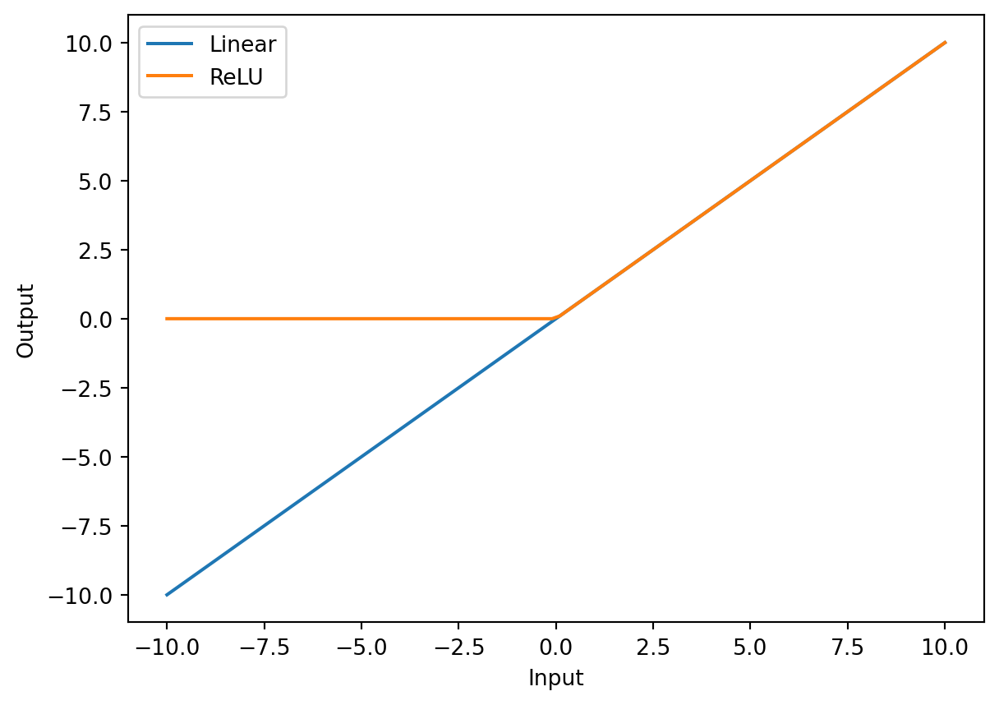
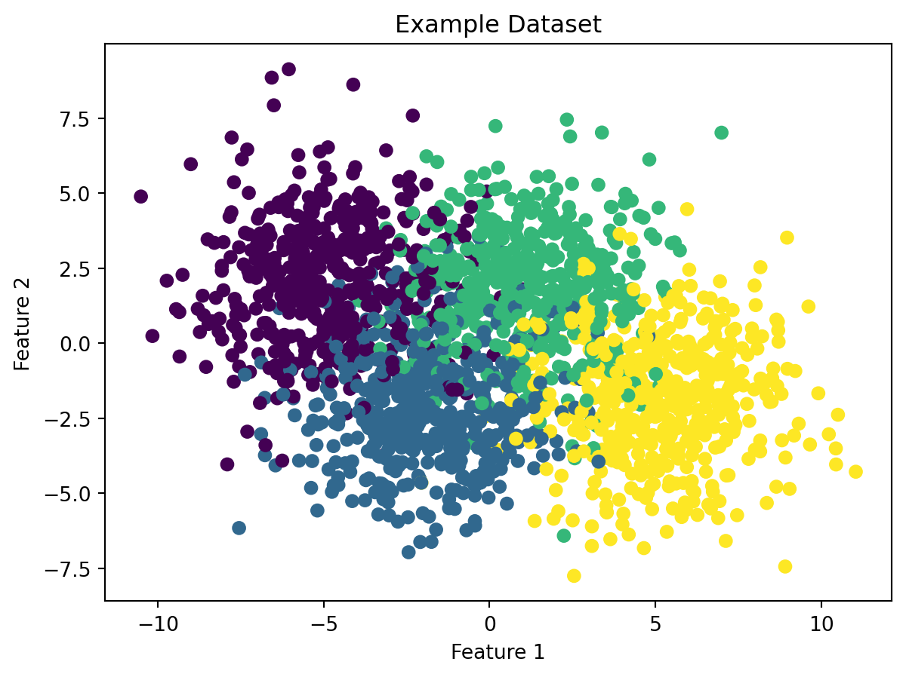
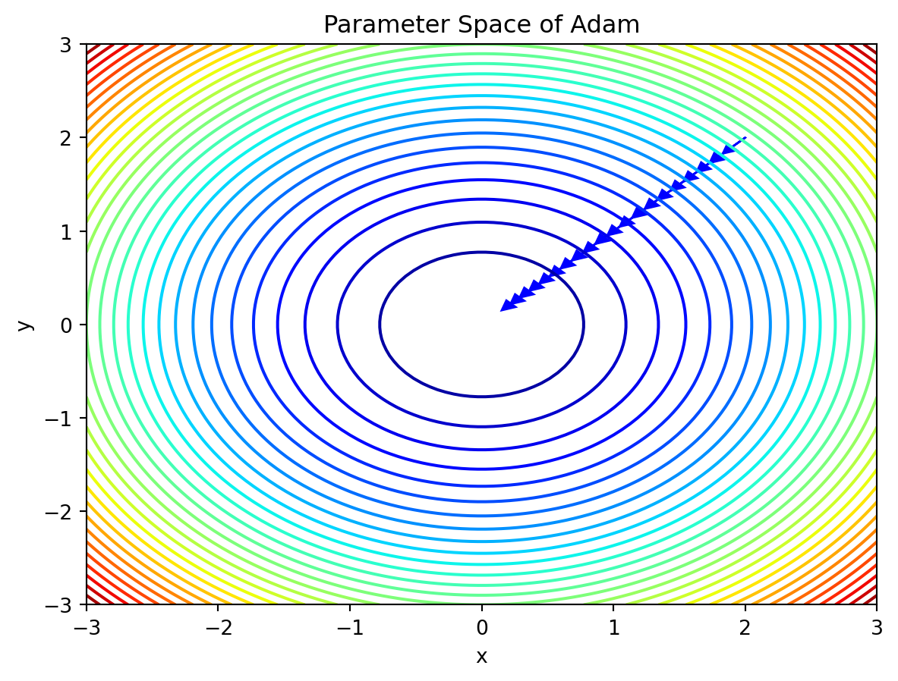
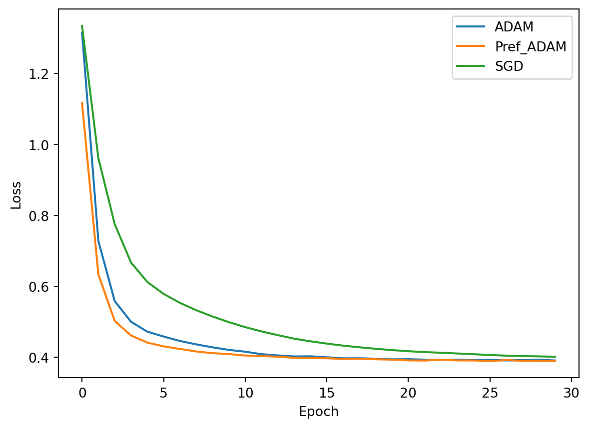

import nltk12 Advanced Topics
12.1 Text Analysis with nltk (by Shivaram Karandikar)
12.1.1 Introduction
nltk, or Natural Language Toolkit, is a Python package which provides a set of tools for text analysis. nltk is used in Natural Language Processing (NLP), a field of computer science which focuses on the interaction between computers and human languages. nltk is a very powerful tool for text analysis, and is used by many researchers and data scientists. In this tutorial, we will learn how to use nltk to analyze text.
12.1.2 Getting Started
First, we must install nltk using pip.
python -m pip install nltk
Necessary datasets/models are needed for specific functions to work. We can download a popular subset with
python -m nltk.downloader popular
12.1.3 Tokenizing
To analyze text, it needs to be broken down into smaller pieces. This is called tokenization. nltk offers two ways to tokenize text: sentence tokenization and word tokenization.
To demonstrate this, we will use the following text, a passage from the 1951 science fiction novel Foundation by Isaac Asimov.
fd_string = """The sum of human knowing is beyond any one man; any thousand men. With the destruction of our social fabric, science will be broken into a million pieces. Individuals will know much of exceedingly tiny facets of what there is to know. They will be helpless and useless by themselves. The bits of lore, meaningless, will not be passed on. They will be lost through the generations. But, if we now prepare a giant summary of all knowledge, it will never be lost. Coming generations will build on it, and will not have to rediscover it for themselves. One millennium will do the work of thirty thousand."""12.1.3.1 Sentence Tokenization
from nltk import sent_tokenize, word_tokenize
nltk.download("popular") # only needs to download once
fd_sent = sent_tokenize(fd_string)
print(fd_sent)[nltk_data] Downloading collection 'popular'
[nltk_data] |
[nltk_data] | Downloading package cmudict to
[nltk_data] | /Users/junyan/nltk_data...
[nltk_data] | Package cmudict is already up-to-date!
[nltk_data] | Downloading package gazetteers to
[nltk_data] | /Users/junyan/nltk_data...
[nltk_data] | Package gazetteers is already up-to-date!
[nltk_data] | Downloading package genesis to
[nltk_data] | /Users/junyan/nltk_data...
[nltk_data] | Package genesis is already up-to-date!
[nltk_data] | Downloading package gutenberg to
[nltk_data] | /Users/junyan/nltk_data...
[nltk_data] | Package gutenberg is already up-to-date!
[nltk_data] | Downloading package inaugural to
[nltk_data] | /Users/junyan/nltk_data...
[nltk_data] | Package inaugural is already up-to-date!
[nltk_data] | Downloading package movie_reviews to
[nltk_data] | /Users/junyan/nltk_data...
[nltk_data] | Package movie_reviews is already up-to-date!
[nltk_data] | Downloading package names to
[nltk_data] | /Users/junyan/nltk_data...
[nltk_data] | Package names is already up-to-date!
[nltk_data] | Downloading package shakespeare to
[nltk_data] | /Users/junyan/nltk_data...
[nltk_data] | Package shakespeare is already up-to-date!
[nltk_data] | Downloading package stopwords to
[nltk_data] | /Users/junyan/nltk_data...
[nltk_data] | Package stopwords is already up-to-date!
[nltk_data] | Downloading package treebank to
[nltk_data] | /Users/junyan/nltk_data...
[nltk_data] | Package treebank is already up-to-date!
[nltk_data] | Downloading package twitter_samples to
[nltk_data] | /Users/junyan/nltk_data...[nltk_data] | Package twitter_samples is already up-to-date!
[nltk_data] | Downloading package omw to /Users/junyan/nltk_data...
[nltk_data] | Package omw is already up-to-date!
[nltk_data] | Downloading package omw-1.4 to
[nltk_data] | /Users/junyan/nltk_data...
[nltk_data] | Package omw-1.4 is already up-to-date!
[nltk_data] | Downloading package wordnet to
[nltk_data] | /Users/junyan/nltk_data...
[nltk_data] | Package wordnet is already up-to-date!
[nltk_data] | Downloading package wordnet2021 to
[nltk_data] | /Users/junyan/nltk_data...
[nltk_data] | Package wordnet2021 is already up-to-date!
[nltk_data] | Downloading package wordnet31 to
[nltk_data] | /Users/junyan/nltk_data...[nltk_data] | Package wordnet31 is already up-to-date!
[nltk_data] | Downloading package wordnet_ic to
[nltk_data] | /Users/junyan/nltk_data...
[nltk_data] | Package wordnet_ic is already up-to-date!
[nltk_data] | Downloading package words to
[nltk_data] | /Users/junyan/nltk_data...
[nltk_data] | Package words is already up-to-date!
[nltk_data] | Downloading package maxent_ne_chunker to
[nltk_data] | /Users/junyan/nltk_data...
[nltk_data] | Package maxent_ne_chunker is already up-to-date!
[nltk_data] | Downloading package punkt to
[nltk_data] | /Users/junyan/nltk_data...
[nltk_data] | Package punkt is already up-to-date!
[nltk_data] | Downloading package snowball_data to
[nltk_data] | /Users/junyan/nltk_data...['The sum of human knowing is beyond any one man; any thousand men.', 'With the destruction of our social fabric, science will be broken into a million pieces.', 'Individuals will know much of exceedingly tiny facets of what there is to know.', 'They will be helpless and useless by themselves.', 'The bits of lore, meaningless, will not be passed on.', 'They will be lost through the generations.', 'But, if we now prepare a giant summary of all knowledge, it will never be lost.', 'Coming generations will build on it, and will not have to rediscover it for themselves.', 'One millennium will do the work of thirty thousand.'][nltk_data] | Package snowball_data is already up-to-date!
[nltk_data] | Downloading package averaged_perceptron_tagger to
[nltk_data] | /Users/junyan/nltk_data...
[nltk_data] | Package averaged_perceptron_tagger is already up-
[nltk_data] | to-date!
[nltk_data] |
[nltk_data] Done downloading collection popular12.1.3.2 Word Tokenization
fd_word = word_tokenize(fd_string)
print(fd_word)['The', 'sum', 'of', 'human', 'knowing', 'is', 'beyond', 'any', 'one', 'man', ';', 'any', 'thousand', 'men', '.', 'With', 'the', 'destruction', 'of', 'our', 'social', 'fabric', ',', 'science', 'will', 'be', 'broken', 'into', 'a', 'million', 'pieces', '.', 'Individuals', 'will', 'know', 'much', 'of', 'exceedingly', 'tiny', 'facets', 'of', 'what', 'there', 'is', 'to', 'know', '.', 'They', 'will', 'be', 'helpless', 'and', 'useless', 'by', 'themselves', '.', 'The', 'bits', 'of', 'lore', ',', 'meaningless', ',', 'will', 'not', 'be', 'passed', 'on', '.', 'They', 'will', 'be', 'lost', 'through', 'the', 'generations', '.', 'But', ',', 'if', 'we', 'now', 'prepare', 'a', 'giant', 'summary', 'of', 'all', 'knowledge', ',', 'it', 'will', 'never', 'be', 'lost', '.', 'Coming', 'generations', 'will', 'build', 'on', 'it', ',', 'and', 'will', 'not', 'have', 'to', 'rediscover', 'it', 'for', 'themselves', '.', 'One', 'millennium', 'will', 'do', 'the', 'work', 'of', 'thirty', 'thousand', '.']Both the sentence tokenization and word tokenization functions return a list of strings. We can use these lists to perform further analysis.
12.1.4 Removing Stopwords
The output of the word tokenization gave us a list of words. However, some of these words are not useful for our analysis. These words are called stopwords. nltk provides a list of stopwords for several languages. We can use this list to remove stopwords from our text.
from nltk.corpus import stopwords
stop_words = set(stopwords.words("english"))
print(stop_words){'while', 'yours', 'were', "mustn't", 'theirs', 't', 'once', 'other', 'itself', "needn't", 'which', 'do', 'about', 'very', 'her', 'again', 'ma', 'own', 'these', 'don', 'll', 'an', "should've", 'of', "you'll", 'same', 'than', 'now', 'aren', "she's", 'further', 'him', 'any', 'ain', 'few', 'me', 'those', 'against', 'through', 'so', 'but', 'couldn', 'above', 'off', 'it', 'up', 'only', 'he', 'some', 'down', 'doesn', 'that', 'at', 'out', 'am', 'wasn', 'how', 'mightn', 'wouldn', 'be', 'ourselves', 'd', 'myself', 'didn', "hasn't", 'needn', 'hadn', 'then', 'themselves', 'she', 'to', 'their', 'if', 'for', 'most', 'ours', 'the', 'our', 'does', "weren't", 'who', 'such', 'having', "haven't", 'himself', 'shouldn', "shouldn't", 'there', 'not', 'haven', 'his', 'or', "won't", 'until', "hadn't", 'all', 'on', "that'll", 'isn', 'with', 'its', 'here', 'from', "couldn't", 'whom', 'by', 'below', 'under', 'just', 'weren', 'no', 'did', 'should', "it's", 'hasn', 'each', 'has', 'herself', 'before', "you'd", "you've", 'what', 'a', 've', 'we', "don't", 'into', 'are', 'both', 'can', "doesn't", 'during', 'won', 'is', 'had', 'i', 'between', 'where', 'more', 'shan', 'this', "mightn't", 'too', 'them', 're', 's', 'being', "wouldn't", 'hers', "wasn't", 'o', 'nor', "didn't", 'mustn', 'because', 'when', 'doing', 'was', 'your', 'they', 'in', "isn't", "aren't", 'y', 'as', 'you', 'and', 'yourselves', "you're", 'my', 'yourself', 'why', 'been', 'will', 'm', "shan't", 'after', 'over', 'have'}fd_filtered = [w for w in fd_word if w.casefold() not in stop_words]
print(fd_filtered)['sum', 'human', 'knowing', 'beyond', 'one', 'man', ';', 'thousand', 'men', '.', 'destruction', 'social', 'fabric', ',', 'science', 'broken', 'million', 'pieces', '.', 'Individuals', 'know', 'much', 'exceedingly', 'tiny', 'facets', 'know', '.', 'helpless', 'useless', '.', 'bits', 'lore', ',', 'meaningless', ',', 'passed', '.', 'lost', 'generations', '.', ',', 'prepare', 'giant', 'summary', 'knowledge', ',', 'never', 'lost', '.', 'Coming', 'generations', 'build', ',', 'rediscover', '.', 'One', 'millennium', 'work', 'thirty', 'thousand', '.']The resulting list is significantly shorter. There are some words that nltk considers stopwords that we may want to keep, depending on the objective of our analysis. Reducing the size of our data can help us to reduce the time it takes to perform our analysis. However, removing too many words can reduce the accuracy, which is especially important when we are trying to perform sentiment analysis.
12.1.5 Stemming
Stemming is a method which allows us to reduce the number of variants of a word. For example, the words connecting, connected, and connection are all variants of the same word connect. nltk includes a few different stemmers based on different algorithms. We will use the Snowball stemmer, an improved version of the 1979 Porter stemmer.
from nltk.stem.snowball import SnowballStemmer
snow_stem = SnowballStemmer(language='english')
fd_stem = [snow_stem.stem(w) for w in fd_word]
print(fd_stem)['the', 'sum', 'of', 'human', 'know', 'is', 'beyond', 'ani', 'one', 'man', ';', 'ani', 'thousand', 'men', '.', 'with', 'the', 'destruct', 'of', 'our', 'social', 'fabric', ',', 'scienc', 'will', 'be', 'broken', 'into', 'a', 'million', 'piec', '.', 'individu', 'will', 'know', 'much', 'of', 'exceed', 'tini', 'facet', 'of', 'what', 'there', 'is', 'to', 'know', '.', 'they', 'will', 'be', 'helpless', 'and', 'useless', 'by', 'themselv', '.', 'the', 'bit', 'of', 'lore', ',', 'meaningless', ',', 'will', 'not', 'be', 'pass', 'on', '.', 'they', 'will', 'be', 'lost', 'through', 'the', 'generat', '.', 'but', ',', 'if', 'we', 'now', 'prepar', 'a', 'giant', 'summari', 'of', 'all', 'knowledg', ',', 'it', 'will', 'never', 'be', 'lost', '.', 'come', 'generat', 'will', 'build', 'on', 'it', ',', 'and', 'will', 'not', 'have', 'to', 'rediscov', 'it', 'for', 'themselv', '.', 'one', 'millennium', 'will', 'do', 'the', 'work', 'of', 'thirti', 'thousand', '.']Stemming algorithms are susceptible to errors. Related words that should share a stem may not, which is known as understemming, which is a false negative. Unrelated words that should not share a stem may, which is known as overstemming, which is a false positive.
12.1.6 POS Tagging
nltk also enables us to label the parts of speech of each word in a text. This is known as part-of-speech (POS) tagging. nltk uses the Penn Treebank tagset, which is a set of tags that are used to label words in a text. The tags are as follows:
nltk.help.upenn_tagset()$: dollar
$ -$ --$ A$ C$ HK$ M$ NZ$ S$ U.S.$ US$
'': closing quotation mark
' ''
(: opening parenthesis
( [ {
): closing parenthesis
) ] }
,: comma
,
--: dash
--
.: sentence terminator
. ! ?
:: colon or ellipsis
: ; ...
CC: conjunction, coordinating
& 'n and both but either et for less minus neither nor or plus so
therefore times v. versus vs. whether yet
CD: numeral, cardinal
mid-1890 nine-thirty forty-two one-tenth ten million 0.5 one forty-
seven 1987 twenty '79 zero two 78-degrees eighty-four IX '60s .025
fifteen 271,124 dozen quintillion DM2,000 ...
DT: determiner
all an another any both del each either every half la many much nary
neither no some such that the them these this those
EX: existential there
there
FW: foreign word
gemeinschaft hund ich jeux habeas Haementeria Herr K'ang-si vous
lutihaw alai je jour objets salutaris fille quibusdam pas trop Monte
terram fiche oui corporis ...
IN: preposition or conjunction, subordinating
astride among uppon whether out inside pro despite on by throughout
below within for towards near behind atop around if like until below
next into if beside ...
JJ: adjective or numeral, ordinal
third ill-mannered pre-war regrettable oiled calamitous first separable
ectoplasmic battery-powered participatory fourth still-to-be-named
multilingual multi-disciplinary ...
JJR: adjective, comparative
bleaker braver breezier briefer brighter brisker broader bumper busier
calmer cheaper choosier cleaner clearer closer colder commoner costlier
cozier creamier crunchier cuter ...
JJS: adjective, superlative
calmest cheapest choicest classiest cleanest clearest closest commonest
corniest costliest crassest creepiest crudest cutest darkest deadliest
dearest deepest densest dinkiest ...
LS: list item marker
A A. B B. C C. D E F First G H I J K One SP-44001 SP-44002 SP-44005
SP-44007 Second Third Three Two * a b c d first five four one six three
two
MD: modal auxiliary
can cannot could couldn't dare may might must need ought shall should
shouldn't will would
NN: noun, common, singular or mass
common-carrier cabbage knuckle-duster Casino afghan shed thermostat
investment slide humour falloff slick wind hyena override subhumanity
machinist ...
NNP: noun, proper, singular
Motown Venneboerger Czestochwa Ranzer Conchita Trumplane Christos
Oceanside Escobar Kreisler Sawyer Cougar Yvette Ervin ODI Darryl CTCA
Shannon A.K.C. Meltex Liverpool ...
NNPS: noun, proper, plural
Americans Americas Amharas Amityvilles Amusements Anarcho-Syndicalists
Andalusians Andes Andruses Angels Animals Anthony Antilles Antiques
Apache Apaches Apocrypha ...
NNS: noun, common, plural
undergraduates scotches bric-a-brac products bodyguards facets coasts
divestitures storehouses designs clubs fragrances averages
subjectivists apprehensions muses factory-jobs ...
PDT: pre-determiner
all both half many quite such sure this
POS: genitive marker
' 's
PRP: pronoun, personal
hers herself him himself hisself it itself me myself one oneself ours
ourselves ownself self she thee theirs them themselves they thou thy us
PRP$: pronoun, possessive
her his mine my our ours their thy your
RB: adverb
occasionally unabatingly maddeningly adventurously professedly
stirringly prominently technologically magisterially predominately
swiftly fiscally pitilessly ...
RBR: adverb, comparative
further gloomier grander graver greater grimmer harder harsher
healthier heavier higher however larger later leaner lengthier less-
perfectly lesser lonelier longer louder lower more ...
RBS: adverb, superlative
best biggest bluntest earliest farthest first furthest hardest
heartiest highest largest least less most nearest second tightest worst
RP: particle
aboard about across along apart around aside at away back before behind
by crop down ever fast for forth from go high i.e. in into just later
low more off on open out over per pie raising start teeth that through
under unto up up-pp upon whole with you
SYM: symbol
% & ' '' ''. ) ). * + ,. < = > @ A[fj] U.S U.S.S.R * ** ***
TO: "to" as preposition or infinitive marker
to
UH: interjection
Goodbye Goody Gosh Wow Jeepers Jee-sus Hubba Hey Kee-reist Oops amen
huh howdy uh dammit whammo shucks heck anyways whodunnit honey golly
man baby diddle hush sonuvabitch ...
VB: verb, base form
ask assemble assess assign assume atone attention avoid bake balkanize
bank begin behold believe bend benefit bevel beware bless boil bomb
boost brace break bring broil brush build ...
VBD: verb, past tense
dipped pleaded swiped regummed soaked tidied convened halted registered
cushioned exacted snubbed strode aimed adopted belied figgered
speculated wore appreciated contemplated ...
VBG: verb, present participle or gerund
telegraphing stirring focusing angering judging stalling lactating
hankerin' alleging veering capping approaching traveling besieging
encrypting interrupting erasing wincing ...
VBN: verb, past participle
multihulled dilapidated aerosolized chaired languished panelized used
experimented flourished imitated reunifed factored condensed sheared
unsettled primed dubbed desired ...
VBP: verb, present tense, not 3rd person singular
predominate wrap resort sue twist spill cure lengthen brush terminate
appear tend stray glisten obtain comprise detest tease attract
emphasize mold postpone sever return wag ...
VBZ: verb, present tense, 3rd person singular
bases reconstructs marks mixes displeases seals carps weaves snatches
slumps stretches authorizes smolders pictures emerges stockpiles
seduces fizzes uses bolsters slaps speaks pleads ...
WDT: WH-determiner
that what whatever which whichever
WP: WH-pronoun
that what whatever whatsoever which who whom whosoever
WP$: WH-pronoun, possessive
whose
WRB: Wh-adverb
how however whence whenever where whereby whereever wherein whereof why
``: opening quotation mark
` ``We can use the function nltk.pos_tag() on our list of tokenized words. This will return a list of tuples, where each tuple contains a word and its corresponding tag.
fd_tag = nltk.pos_tag(fd_word)
print(fd_tag)[('The', 'DT'), ('sum', 'NN'), ('of', 'IN'), ('human', 'JJ'), ('knowing', 'NN'), ('is', 'VBZ'), ('beyond', 'IN'), ('any', 'DT'), ('one', 'CD'), ('man', 'NN'), (';', ':'), ('any', 'DT'), ('thousand', 'CD'), ('men', 'NNS'), ('.', '.'), ('With', 'IN'), ('the', 'DT'), ('destruction', 'NN'), ('of', 'IN'), ('our', 'PRP$'), ('social', 'JJ'), ('fabric', 'NN'), (',', ','), ('science', 'NN'), ('will', 'MD'), ('be', 'VB'), ('broken', 'VBN'), ('into', 'IN'), ('a', 'DT'), ('million', 'CD'), ('pieces', 'NNS'), ('.', '.'), ('Individuals', 'NNS'), ('will', 'MD'), ('know', 'VB'), ('much', 'RB'), ('of', 'IN'), ('exceedingly', 'RB'), ('tiny', 'JJ'), ('facets', 'NNS'), ('of', 'IN'), ('what', 'WP'), ('there', 'EX'), ('is', 'VBZ'), ('to', 'TO'), ('know', 'VB'), ('.', '.'), ('They', 'PRP'), ('will', 'MD'), ('be', 'VB'), ('helpless', 'JJ'), ('and', 'CC'), ('useless', 'JJ'), ('by', 'IN'), ('themselves', 'PRP'), ('.', '.'), ('The', 'DT'), ('bits', 'NNS'), ('of', 'IN'), ('lore', 'NN'), (',', ','), ('meaningless', 'NN'), (',', ','), ('will', 'MD'), ('not', 'RB'), ('be', 'VB'), ('passed', 'VBN'), ('on', 'IN'), ('.', '.'), ('They', 'PRP'), ('will', 'MD'), ('be', 'VB'), ('lost', 'VBN'), ('through', 'IN'), ('the', 'DT'), ('generations', 'NNS'), ('.', '.'), ('But', 'CC'), (',', ','), ('if', 'IN'), ('we', 'PRP'), ('now', 'RB'), ('prepare', 'VBP'), ('a', 'DT'), ('giant', 'JJ'), ('summary', 'NN'), ('of', 'IN'), ('all', 'DT'), ('knowledge', 'NN'), (',', ','), ('it', 'PRP'), ('will', 'MD'), ('never', 'RB'), ('be', 'VB'), ('lost', 'VBN'), ('.', '.'), ('Coming', 'VBG'), ('generations', 'NNS'), ('will', 'MD'), ('build', 'VB'), ('on', 'IN'), ('it', 'PRP'), (',', ','), ('and', 'CC'), ('will', 'MD'), ('not', 'RB'), ('have', 'VB'), ('to', 'TO'), ('rediscover', 'VB'), ('it', 'PRP'), ('for', 'IN'), ('themselves', 'PRP'), ('.', '.'), ('One', 'CD'), ('millennium', 'NN'), ('will', 'MD'), ('do', 'VB'), ('the', 'DT'), ('work', 'NN'), ('of', 'IN'), ('thirty', 'JJ'), ('thousand', 'NN'), ('.', '.')]The tokenized words from the quote should be easy to tag correctly. The function may encounter difficulty with less conventional words (e.g. Old English), but it will attempt to tag based on context.
12.1.7 Lemmatizing
Lemmatizing is similar to stemming, but it is more accurate. Lemmatizing is a process which reduces words to their lemma, which is the base form of a word.nltk includes a lemmatizer based on the WordNet database. We can demonstrate this using a quote from the 1868 novel Little Women by Louisa May Alcott.
from nltk.stem import WordNetLemmatizer
lemmatizer = WordNetLemmatizer()
quote = "The dim, dusty room, with the busts staring down from the tall book-cases, the cosy chairs, the globes, and, best of all, the wilderness of books, in which she could wander where she liked, made the library a region of bliss to her."
quote_token = word_tokenize(quote)
quote_lemma = [lemmatizer.lemmatize(w) for w in quote_token]
print(quote_lemma)['The', 'dim', ',', 'dusty', 'room', ',', 'with', 'the', 'bust', 'staring', 'down', 'from', 'the', 'tall', 'book-cases', ',', 'the', 'cosy', 'chair', ',', 'the', 'globe', ',', 'and', ',', 'best', 'of', 'all', ',', 'the', 'wilderness', 'of', 'book', ',', 'in', 'which', 'she', 'could', 'wander', 'where', 'she', 'liked', ',', 'made', 'the', 'library', 'a', 'region', 'of', 'bliss', 'to', 'her', '.']12.1.8 Chunking/Chinking
While tokenizing allows us to distinguish individual words and sentences within a larger body of text, Chunking allows us to identify phrases based on grammar we specify.
#nltk.download("averaged_perceptron_tagger")
quote_tag = nltk.pos_tag(quote_token)We can then name grammar rules to apply to the text. These use regular expressions, which are listed below:
| Operator | Behavior |
| . | Wildcard, matches any character |
| ^abc | Matches some pattern abc at the start of a string |
| abc$ | Matches some pattern abc at the end of a string |
| [abc] | Matches one of a set of characters |
| [A-Z0-9] | Matches one of a range of characters |
| ed|ing|s | Matches one of the specified strings (disjunction) |
| * | Zero or more of previous item, e.g. a*, [a-z]* (also known as Kleene Closure) |
| + | One or more of previous item, e.g. a+, [a-z]+ |
| ? | Zero or one of the previous item (i.e. optional), e.g. a?, [a-z]? |
| {n} | Exactly n repeats where n is a non-negative integer |
| {n,} | At least n repeats |
| {,n} | No more than n repeats |
| {m,n} | At least m and no more than n repeats |
| a(b|c)+ | Parentheses that indicate the scope of the operators |
import re
import regexgrammar = r"""
NP: {<DT|JJ|NN.*>+} # Chunk sequences of DT, JJ, NN
PP: {<IN><NP>} # Chunk prepositions followed by NP
VP: {<VB.*><NP|PP|CLAUSE>+$} # Chunk verbs and their arguments
CLAUSE: {<NP><VP>} # Chunk NP, VP
"""chunk_parser = nltk.RegexpParser(grammar)
tree = chunk_parser.parse(quote_tag)
tree.pretty_print(unicodelines=True) S
┌───┬───────┬─────────┬─────┬───┬───┬────┬─────┬─────┬──────┬───┬────┬───────┬────────┬───────┬─────────┬─────────┬────────┬────────┬──────┬─────┬───────┬──────┬──────┬──────────┬────┴──────────────┬────────────────────┬──────────────────────────────────┬───────────────────────────────────┬───────────────────────┬────────────────────┬─────────────────┬───────────────────────┬───────────────────────┬────────────────────────────┐
│ │ │ │ │ │ │ │ │ │ │ │ │ │ │ │ │ │ │ │ │ │ │ │ │ │ │ PP PP │ │ PP │ PP │ PP
│ │ │ │ │ │ │ │ │ │ │ │ │ │ │ │ │ │ │ │ │ │ │ │ │ │ │ ┌──────┴─────┐ ┌────────────┴─────┐ │ │ ┌────┴────┐ │ ┌────┴──────┐ │ ┌────┴─────┐
│ │ │ │ │ │ │ │ │ │ │ │ │ │ │ │ │ │ │ │ │ │ │ │ │ NP NP │ NP │ NP NP NP │ NP NP │ NP NP │ NP
│ │ │ │ │ │ │ │ │ │ │ │ │ │ │ │ │ │ │ │ │ │ │ │ │ ┌─────┴────┐ ┌──────┴─────┐ │ ┌─────┴──────┐ │ ┌───────────┼──────────┐ ┌───────┼────────┐ ┌─────┴──────┐ │ │ ┌─────┴────────┐ │ │ ┌────────┼───────┬───────┐ │ │
,/, ,/, staring/VBG down/RP ,/, ,/, ,/, and/CC ,/, best/JJS ,/, ,/, in/IN which/WDT she/PRP could/MD wander/VB where/WRB she/PRP liked/VBD ,/, made/VBD to/TO her/PRP$ ./. The/DT dim/NN dusty/JJ room/NN with/IN the/DT busts/NNS from/IN the/DT tall/JJ book-cases/NNS the/DT cosy/JJ chairs/NNS the/DT globes/NNS of/IN all/DT the/DT wilderness/NN of/IN books/NNS the/DT library/NN a/DT region/NN of/IN bliss/NN
As you can see, the generated tree shows the chunks that were identified by the grammar rules. There also is a chink operator, which is the opposite of chunk. It allows us to remove a chunk from a larger chunk.
12.1.9 Named Entity Recognition
Previous methods have been able to identify the parts of speech of each word in a text. However, we may want to identify specific entities within the text. For example, we may want to identify the names of people, places, and organizations. nltk includes a named entity recognizer which can identify these entities. We can demonstrate this using a quote from The Iliad by Homer.
homer = "In the war of Troy, the Greeks having sacked some of the neighbouring towns, and taken from thence two beautiful captives, Chryseïs and Briseïs, allotted the first to Agamemnon, and the last to Achilles."
homer_token = word_tokenize(homer)
homer_tag = nltk.pos_tag(homer_token)#nltk.download("maxent_ne_chunker")
#nltk.download("words")
tree2 = nltk.ne_chunk(homer_tag)
tree2.pretty_print(unicodelines=True) S
┌─────┬──────┬──────┬────┬────┬────────┬──────────┬─────────┬──────┬─────┬───────────┬────────────┬──────┬────┬────────┬────────┬────────┬───────┬─────────┼────────────┬────────┬────┬─────┬───────┬─────────┬───────┬───────┬────┬────┬──────┬───────┬──────┬────┬─────┬─────────┬───────────┬────────────┬────────────┬────────────┐
│ │ │ │ │ │ │ │ │ │ │ │ │ │ │ │ │ │ │ │ │ │ │ │ │ │ │ │ │ │ │ │ │ │ GPE GPE PERSON GPE GPE GPE
│ │ │ │ │ │ │ │ │ │ │ │ │ │ │ │ │ │ │ │ │ │ │ │ │ │ │ │ │ │ │ │ │ │ │ │ │ │ │ │
In/IN the/DT war/NN of/IN ,/, the/DT having/VBG sacked/VBN some/DT of/IN the/DT neighbouring/JJ towns/NNS ,/, and/CC taken/VBN from/IN thence/NN two/CD beautiful/JJ captives/NNS ,/, and/CC ,/, allotted/VBD the/DT first/JJ to/TO ,/, and/CC the/DT last/JJ to/TO ./. Troy/NNP Greeks/NNP Chryseïs/NNP Briseïs/NNP Agamemnon/NNP Achilles/NNP
In the tree, some of the words that should be tagged as PERSON are tagged as GPE, or Geo-Political Entity. In these cases, we can also generate a tree which does not specify the type of named entity.
tree3 = nltk.ne_chunk(homer_tag, binary=True)
tree3.pretty_print(unicodelines=True) S
┌─────┬──────┬──────┬────┬────┬────────┬──────────┬─────────┬──────┬─────┬───────────┬────────────┬──────┬────┬────────┬────────┬────────┬───────┬─────────┼────────────┬────────┬────┬─────┬───────┬─────────┬───────┬───────┬────┬────┬──────┬───────┬──────┬────┬─────┬─────────┬───────────┬────────────┬────────────┬────────────┐
│ │ │ │ │ │ │ │ │ │ │ │ │ │ │ │ │ │ │ │ │ │ │ │ │ │ │ │ │ │ │ │ │ │ NE NE NE NE NE NE
│ │ │ │ │ │ │ │ │ │ │ │ │ │ │ │ │ │ │ │ │ │ │ │ │ │ │ │ │ │ │ │ │ │ │ │ │ │ │ │
In/IN the/DT war/NN of/IN ,/, the/DT having/VBG sacked/VBN some/DT of/IN the/DT neighbouring/JJ towns/NNS ,/, and/CC taken/VBN from/IN thence/NN two/CD beautiful/JJ captives/NNS ,/, and/CC ,/, allotted/VBD the/DT first/JJ to/TO ,/, and/CC the/DT last/JJ to/TO ./. Troy/NNP Greeks/NNP Chryseïs/NNP Briseïs/NNP Agamemnon/NNP Achilles/NNP
12.1.10 Analyzing Corpora
nltk includes a number of corpora, which are large bodies of text. We will try out some methods on the 1851 novel Moby Dick by Herman Melville.
from nltk.book import **** Introductory Examples for the NLTK Book ***
Loading text1, ..., text9 and sent1, ..., sent9
Type the name of the text or sentence to view it.
Type: 'texts()' or 'sents()' to list the materials.text1: Moby Dick by Herman Melville 1851text2: Sense and Sensibility by Jane Austen 1811
text3: The Book of Genesistext4: Inaugural Address Corpustext5: Chat Corpus
text6: Monty Python and the Holy Grailtext7: Wall Street Journal
text8: Personals Corpus
text9: The Man Who Was Thursday by G . K . Chesterton 190812.1.10.1 Concordance
concordance allows us to find all instances of a word in a text. We can use this to find all instances of the word “whale” in Moby Dick.
text1.concordance("whale")Displaying 25 of 1226 matches:
s , and to teach them by what name a whale - fish is to be called in our tongue
t which is not true ." -- HACKLUYT " WHALE . ... Sw . and Dan . HVAL . This ani
ulted ." -- WEBSTER ' S DICTIONARY " WHALE . ... It is more immediately from th
ISH . WAL , DUTCH . HWAL , SWEDISH . WHALE , ICELANDIC . WHALE , ENGLISH . BALE
HWAL , SWEDISH . WHALE , ICELANDIC . WHALE , ENGLISH . BALEINE , FRENCH . BALLE
least , take the higgledy - piggledy whale statements , however authentic , in
dreadful gulf of this monster ' s ( whale ' s ) mouth , are immediately lost a
patient Job ." -- RABELAIS . " This whale ' s liver was two cartloads ." -- ST
Touching that monstrous bulk of the whale or ork we have received nothing cert
of oil will be extracted out of one whale ." -- IBID . " HISTORY OF LIFE AND D
ise ." -- KING HENRY . " Very like a whale ." -- HAMLET . " Which to secure , n
restless paine , Like as the wounded whale to shore flies thro ' the maine ." -
. OF SPERMA CETI AND THE SPERMA CETI WHALE . VIDE HIS V . E . " Like Spencer '
t had been a sprat in the mouth of a whale ." -- PILGRIM ' S PROGRESS . " That
EN ' S ANNUS MIRABILIS . " While the whale is floating at the stern of the ship
e ship called The Jonas - in - the - Whale . ... Some say the whale can ' t ope
in - the - Whale . ... Some say the whale can ' t open his mouth , but that is
masts to see whether they can see a whale , for the first discoverer has a duc
for his pains . ... I was told of a whale taken near Shetland , that had above
oneers told me that he caught once a whale in Spitzbergen that was white all ov
2 , one eighty feet in length of the whale - bone kind came in , which ( as I w
n master and kill this Sperma - ceti whale , for I could never hear of any of t
. 1729 . "... and the breath of the whale is frequendy attended with such an i
ed with hoops and armed with ribs of whale ." -- RAPE OF THE LOCK . " If we com
contemptible in the comparison . The whale is doubtless the largest animal in c12.1.10.2 Dispersion Plot
dispersion_plot allows us to see how a word is used throughout a text. We can use this to see the representation of characters throughout Moby Dick.
text1.dispersion_plot(["Ahab", "Ishmael", "Starbuck", "Queequeg"])/usr/local/lib/python3.11/site-packages/nltk/draw/__init__.py:15: UserWarning: nltk.draw package not loaded (please install Tkinter library).
warnings.warn("nltk.draw package not loaded (please install Tkinter library).")
12.1.10.3 Frequency Distribution
FreqDist allows us to see the frequency of each word in a text. We can use this to see the most common words in Moby Dick.
from nltk import FreqDist
fdist1 = FreqDist(text1)
print(fdist1)<FreqDist with 19317 samples and 260819 outcomes>We can use the list of stop words generated previously to help us focus on meaningful words.
text1_imp = [w for w in text1 if w not in stop_words and w.isalpha()]
fdist2 = FreqDist(text1_imp)
fdist2.most_common(20)[('I', 2124),
('whale', 906),
('one', 889),
('But', 705),
('like', 624),
('The', 612),
('upon', 538),
('man', 508),
('ship', 507),
('Ahab', 501),
('ye', 460),
('old', 436),
('sea', 433),
('would', 421),
('And', 369),
('head', 335),
('though', 335),
('boat', 330),
('time', 324),
('long', 318)]We can visualize the frequency distribution using plot.
fdist2.plot(20, cumulative=True)
<AxesSubplot: xlabel='Samples', ylabel='Cumulative Counts'>12.1.10.4 Collocations
collocations allows us to find words that commonly appear together. We can use this to find the most common collocations in Moby Dick.
text1.collocations()Sperm Whale; Moby Dick; White Whale; old man; Captain Ahab; sperm
whale; Right Whale; Captain Peleg; New Bedford; Cape Horn; cried Ahab;
years ago; lower jaw; never mind; Father Mapple; cried Stubb; chief
mate; white whale; ivory leg; one hand12.1.11 Conclusion
In this tutorial, we have learned how to use nltk to perform basic text analysis. There are many methods included in this package that help provide structure to text. These methods can be used in conjunction with other packages to perform more complex analysis. For example, a dataframe of open-ended customer feedback could be processed to identify common themes, as well as the polarity of the feedback.
12.1.12 Resources
12.2 Neural Networks with Tensorflow (by Giovanni Lunetta)
A neural network is a type of machine learning algorithm that is inspired by the structure and function of the human brain. It consists of layers of interconnected nodes, or neurons, that can learn to recognize patterns in data and make predictions or decisions based on that input.
Neural networks are used in a wide variety of applications, including image and speech recognition, natural language processing, predictive analytics, robotics, and more. They have been especially effective in tasks that require pattern recognition, such as identifying objects in images, translating between languages, and predicting future trends in data.
12.2.1 Neural Network Architecture
A neural network consists of one or more layers of neurons, each of which takes input from the previous layer and produces output for the next layer. The input layer receives raw data, while the output layer produces predictions or decisions based on that input. The hidden layers in between contain neurons that can learn to recognize patterns in the data and extract features that are useful for making predictions.
Each neuron in a neural network has a set of weights and biases that determine how it responds to input. These values are adjusted during training to improve the accuracy of the network’s predictions. The activation function of a neuron determines how it responds to input, such as by applying a threshold or sigmoid function.
Code
from IPython.display import Image
# Image(filename='ai-artificial-neural-network-alex-castrounis.png')The input layer: The three blue nodes on the left side of the diagram represent the input layer. This layer receives input data, such as pixel values from an image or numerical features from a dataset.
The hidden layer: The four white nodes in the middle of the diagram represent the hidden layer. This layer performs computations on the input data and generates output values that are passed to the output layer.
The output layer: The orange node on the right side of the diagram represents the output layer. This layer generates the final output of the neural network, which can be a binary classification (0 or 1) or a continuous value.
The arrows: The arrows in the diagram represent the connections between nodes in adjacent layers. Each arrow has an associated weight, which is a parameter learned during the training process. The weights determine the strength of the connections between the nodes and are used to compute the output values of each node.
12.2.2 ReLu Activation Function
The ReLU (Rectified Linear Unit) activation function is used in neural networks to introduce non-linearity into the model. Non-linearity allows neural networks to learn more complex relationships between inputs and outputs.
ReLU is a simple function that returns the input if it is positive, and 0 otherwise. This means that ReLU “activates” (returns a non-zero output) only if the input is positive, which can be thought of as a way for the neuron to “turn on” when the input is significant enough. In contrast, a linear function would simply scale the input by a constant factor, which would not introduce any non-linearity into the model.
In simple terms, ReLU allows the neural network to selectively activate certain neurons based on the importance of the input, which helps it learn more complex patterns in the data.
import numpy as np
import matplotlib.pyplot as plt
def linear(x):
return x
def relu(x):
return np.maximum(0, x)
x = np.linspace(-10, 10, 100)
y_linear = linear(x)
y_relu = relu(x)
plt.plot(x, y_linear, label='Linear')
plt.plot(x, y_relu, label='ReLU')
plt.legend()
plt.xlabel('Input')
plt.ylabel('Output')
plt.show()
12.2.3 Demonstration
TensorFlow is an open-source software library developed by Google that is widely used for building and training machine learning models, including neural networks. TensorFlow provides a range of tools and abstractions that make it easier to build and optimize complex models, as well as tools for deploying models in production.
Here’s an example of how to use TensorFlow to build a neural network for a softmax regression model:
First we start by importing the proper packages:
import tensorflow as tf
from tensorflow.keras.models import Sequential
from tensorflow.keras.layers import Dense
from tensorflow.keras.utils import plot_model
from tensorflow.keras.losses import SparseCategoricalCrossentropy
import numpy as np
from sklearn.datasets import make_blobs
import matplotlib.pyplot as plt2023-04-10 13:31:04.811994: I tensorflow/core/platform/cpu_feature_guard.cc:182] This TensorFlow binary is optimized to use available CPU instructions in performance-critical operations.
To enable the following instructions: AVX2 FMA, in other operations, rebuild TensorFlow with the appropriate compiler flags.TensorFlow and Keras are closely related, as Keras is a high-level API that is built on top of TensorFlow. Keras provides a user-friendly interface for building neural networks, making it easy to create, train, and evaluate models without needing to know the details of TensorFlow’s low-level API.
Keras was initially developed as a standalone library, but since version 2.0, it has been integrated into TensorFlow as its official high-level API. This means that Keras can now be used as a part of TensorFlow, providing a unified and comprehensive platform for deep learning.
In other words, Keras is essentially a wrapper around TensorFlow that provides a simpler and more intuitive interface for building neural networks. While TensorFlow provides a lower-level API that offers more control and flexibility, Keras makes it easier to get started with building deep learning models, especially for beginners.
# make dataset for example
centers = [[-5, 2], [-2, -2], [1, 2], [5, -2]]
X_train, y_train = make_blobs(n_samples=2000, centers=centers, cluster_std=2.0,random_state=75)
# plot the example dataset
plt.scatter(X_train[:, 0], X_train[:, 1], c=y_train)
plt.title('Example Dataset')
plt.xlabel('Feature 1')
plt.ylabel('Feature 2')
plt.show()
We will talk about three ways to implement a softmax regression machine learning model. The first using Stochastic Gradient Descent as the loss function. Next, using a potentially more efficient algoritm called the Adam Algoritm. Finally, using the Adam Algoritm again, but more efficiently.
12.2.3.1 Stochastic Gradient Descent
sgd_model = tf.keras.Sequential([
Dense(10, activation = 'relu'),
Dense(5, activation = 'relu'),
Dense(4, activation = 'softmax') # <-- softmax activation here
]
)
sgd_model.compile(
loss=tf.keras.losses.SparseCategoricalCrossentropy(), # <-- Note
)
sgd_history = sgd_model.fit(
X_train,y_train,
epochs=30
)Epoch 1/30 1/63 [..............................] - ETA: 50s - loss: 2.065230/63 [=============>................] - ETA: 0s - loss: 2.0594 42/63 [===================>..........] - ETA: 0s - loss: 1.982153/63 [========================>.....] - ETA: 0s - loss: 1.905162/63 [============================>.] - ETA: 0s - loss: 1.856663/63 [==============================] - 1s 4ms/step - loss: 1.8536Epoch 2/30 1/63 [..............................] - ETA: 0s - loss: 1.519918/63 [=======>......................] - ETA: 0s - loss: 1.414234/63 [===============>..............] - ETA: 0s - loss: 1.344344/63 [===================>..........] - ETA: 0s - loss: 1.307463/63 [==============================] - 0s 3ms/step - loss: 1.2554Epoch 3/30 1/63 [..............................] - ETA: 0s - loss: 1.039324/63 [==========>...................] - ETA: 0s - loss: 1.016453/63 [========================>.....] - ETA: 0s - loss: 0.949763/63 [==============================] - 0s 2ms/step - loss: 0.9318Epoch 4/30 1/63 [..............................] - ETA: 0s - loss: 0.779823/63 [=========>....................] - ETA: 0s - loss: 0.811346/63 [====================>.........] - ETA: 0s - loss: 0.783863/63 [==============================] - 0s 2ms/step - loss: 0.7641Epoch 5/30 1/63 [..............................] - ETA: 0s - loss: 0.832728/63 [============>.................] - ETA: 0s - loss: 0.684554/63 [========================>.....] - ETA: 0s - loss: 0.663463/63 [==============================] - 0s 2ms/step - loss: 0.6557Epoch 6/30 1/63 [..............................] - ETA: 0s - loss: 0.513625/63 [==========>...................] - ETA: 0s - loss: 0.591355/63 [=========================>....] - ETA: 0s - loss: 0.575563/63 [==============================] - 0s 2ms/step - loss: 0.5797Epoch 7/30 1/63 [..............................] - ETA: 0s - loss: 0.506338/63 [=================>............] - ETA: 0s - loss: 0.540663/63 [==============================] - 0s 1ms/step - loss: 0.5268Epoch 8/30 1/63 [..............................] - ETA: 0s - loss: 0.452442/63 [===================>..........] - ETA: 0s - loss: 0.500963/63 [==============================] - 0s 1ms/step - loss: 0.4921Epoch 9/30 1/63 [..............................] - ETA: 0s - loss: 0.496838/63 [=================>............] - ETA: 0s - loss: 0.474763/63 [==============================] - 0s 1ms/step - loss: 0.4702Epoch 10/30 1/63 [..............................] - ETA: 0s - loss: 0.434442/63 [===================>..........] - ETA: 0s - loss: 0.471563/63 [==============================] - 0s 1ms/step - loss: 0.4558Epoch 11/30 1/63 [..............................] - ETA: 0s - loss: 0.415343/63 [===================>..........] - ETA: 0s - loss: 0.455263/63 [==============================] - 0s 1ms/step - loss: 0.4462Epoch 12/30 1/63 [..............................] - ETA: 0s - loss: 0.702243/63 [===================>..........] - ETA: 0s - loss: 0.428663/63 [==============================] - 0s 1ms/step - loss: 0.4386Epoch 13/30 1/63 [..............................] - ETA: 0s - loss: 0.225843/63 [===================>..........] - ETA: 0s - loss: 0.422663/63 [==============================] - 0s 1ms/step - loss: 0.4332Epoch 14/30 1/63 [..............................] - ETA: 0s - loss: 0.271843/63 [===================>..........] - ETA: 0s - loss: 0.428963/63 [==============================] - 0s 1ms/step - loss: 0.4281Epoch 15/30 1/63 [..............................] - ETA: 0s - loss: 0.268442/63 [===================>..........] - ETA: 0s - loss: 0.429963/63 [==============================] - 0s 1ms/step - loss: 0.4241Epoch 16/30 1/63 [..............................] - ETA: 0s - loss: 0.230041/63 [==================>...........] - ETA: 0s - loss: 0.425063/63 [==============================] - 0s 1ms/step - loss: 0.4203Epoch 17/30 1/63 [..............................] - ETA: 0s - loss: 0.363741/63 [==================>...........] - ETA: 0s - loss: 0.417663/63 [==============================] - 0s 1ms/step - loss: 0.4179Epoch 18/30 1/63 [..............................] - ETA: 0s - loss: 0.267529/63 [============>.................] - ETA: 0s - loss: 0.430658/63 [==========================>...] - ETA: 0s - loss: 0.420163/63 [==============================] - 0s 2ms/step - loss: 0.4149Epoch 19/30 1/63 [..............................] - ETA: 0s - loss: 0.285219/63 [========>.....................] - ETA: 0s - loss: 0.390120/63 [========>.....................] - ETA: 0s - loss: 0.393921/63 [=========>....................] - ETA: 0s - loss: 0.422738/63 [=================>............] - ETA: 0s - loss: 0.413963/63 [==============================] - 0s 4ms/step - loss: 0.4130Epoch 20/30 1/63 [..............................] - ETA: 0s - loss: 0.363820/63 [========>.....................] - ETA: 0s - loss: 0.411033/63 [==============>...............] - ETA: 0s - loss: 0.408657/63 [==========================>...] - ETA: 0s - loss: 0.422163/63 [==============================] - 0s 3ms/step - loss: 0.4107Epoch 21/30 1/63 [..............................] - ETA: 0s - loss: 0.189926/63 [===========>..................] - ETA: 0s - loss: 0.411256/63 [=========================>....] - ETA: 0s - loss: 0.407563/63 [==============================] - 0s 2ms/step - loss: 0.4097Epoch 22/30 1/63 [..............................] - ETA: 0s - loss: 0.334239/63 [=================>............] - ETA: 0s - loss: 0.414763/63 [==============================] - 0s 1ms/step - loss: 0.4084Epoch 23/30 1/63 [..............................] - ETA: 0s - loss: 0.339531/63 [=============>................] - ETA: 0s - loss: 0.412750/63 [======================>.......] - ETA: 0s - loss: 0.411663/63 [==============================] - 0s 2ms/step - loss: 0.4066Epoch 24/30 1/63 [..............................] - ETA: 0s - loss: 0.472435/63 [===============>..............] - ETA: 0s - loss: 0.399663/63 [==============================] - 0s 2ms/step - loss: 0.4060Epoch 25/30 1/63 [..............................] - ETA: 0s - loss: 0.340730/63 [=============>................] - ETA: 0s - loss: 0.392040/63 [==================>...........] - ETA: 0s - loss: 0.391353/63 [========================>.....] - ETA: 0s - loss: 0.407062/63 [============================>.] - ETA: 0s - loss: 0.404563/63 [==============================] - 0s 4ms/step - loss: 0.4052Epoch 26/30 1/63 [..............................] - ETA: 0s - loss: 0.448015/63 [======>.......................] - ETA: 0s - loss: 0.370836/63 [================>.............] - ETA: 0s - loss: 0.416862/63 [============================>.] - ETA: 0s - loss: 0.403263/63 [==============================] - 0s 3ms/step - loss: 0.4042Epoch 27/30 1/63 [..............................] - ETA: 0s - loss: 0.667720/63 [========>.....................] - ETA: 0s - loss: 0.420045/63 [====================>.........] - ETA: 0s - loss: 0.394563/63 [==============================] - 0s 2ms/step - loss: 0.4039Epoch 28/30 1/63 [..............................] - ETA: 0s - loss: 0.189723/63 [=========>....................] - ETA: 0s - loss: 0.404751/63 [=======================>......] - ETA: 0s - loss: 0.411363/63 [==============================] - 0s 2ms/step - loss: 0.4027Epoch 29/30 1/63 [..............................] - ETA: 0s - loss: 0.279628/63 [============>.................] - ETA: 0s - loss: 0.397358/63 [==========================>...] - ETA: 0s - loss: 0.400363/63 [==============================] - 0s 2ms/step - loss: 0.4026Epoch 30/30 1/63 [..............................] - ETA: 0s - loss: 0.203918/63 [=======>......................] - ETA: 0s - loss: 0.380731/63 [=============>................] - ETA: 0s - loss: 0.371952/63 [=======================>......] - ETA: 0s - loss: 0.396763/63 [==============================] - 0s 3ms/step - loss: 0.4014Here is a step-by-step explanation of the code:
First, we create a sequential model using the
tf.keras.Sequential()function. This is a linear stack of layers where we can add layers using the.add()method.Then we add three dense layers to the model using the
.add()method. The first two layers have the relu activation function and the last layer has the softmax activation function.We import
SparseCategoricalCrossentropyfromtensorflow.keras.losses. This is our loss function, which will be used to evaluate the model during training.We compile the model using
model.compile(), specifying theSparseCategoricalCrossentropy()as our loss function.We fit the model to the training data using
model.fit(), specifying the training data (X_train and y_train) and the number of epochs* (10).
In summary, the code creates a sequential model with three dense layers, using the relu activation function in the first two layers and the softmax activation function in the output layer. The model is then compiled using the SparseCategoricalCrossentropy() loss function, and finally, the model is trained for 10 epochs using the model.fit() method.
*In machine learning, the term “epochs” refers to the number of times the entire training dataset is used to train the model. During each epoch, the model processes the entire dataset, updates its parameters based on the computed errors, and moves on to the next epoch until the desired level of accuracy is achieved. Increasing the number of epochs may improve the model accuracy, but it also increases the risk of overfitting on the training data. Therefore, the number of epochs is a hyperparameter that must be tuned to achieve the best possible results.
sgd_model.summary()Model: "sequential"_________________________________________________________________ Layer (type) Output Shape Param # ================================================================= dense (Dense) (None, 10) 30 dense_1 (Dense) (None, 5) 55 dense_2 (Dense) (None, 4) 24 =================================================================Total params: 109Trainable params: 109Non-trainable params: 0_________________________________________________________________In this example, the first hidden layer has 10 neurons, so there are 10 * 3 = 30 parameters (3 input features). The second hidden layer has 5 neurons, so there are 5 * 10 + 5 = 55 parameters (10 inputs from the previous layer, plus 5 bias terms). The output layer has 4 neurons, so there are 5 * 4 + 4 = 24 parameters (5 inputs from the previous layer, plus 4 bias terms).
The output None for the total number of trainable parameters means that none of the layers have been marked as non-trainable.
The None values in the output shape column represent the variable batch size that is inputted during the training process.
p_nonpreferred = sgd_model.predict(X_train)
print(p_nonpreferred [:2])
print("largest value", np.max(p_nonpreferred), "smallest value", np.min(p_nonpreferred)) 1/63 [..............................] - ETA: 6s42/63 [===================>..........] - ETA: 0s63/63 [==============================] - 0s 1ms/step[[9.9686207e-03 9.6037227e-01 1.4029160e-02 1.5630135e-02]
[1.9495047e-07 1.5884613e-03 7.8975148e-02 9.1943622e-01]]
largest value 0.9999878 smallest value 2.897178e-14p_nonpreferred = model.predict(X_train): This line uses the predict method of the model object to make predictions on the input data X_train. The resulting predictions are stored in the p_nonpreferred variable.
print(p_nonpreferred [:2]): This line prints the first two rows of p_nonpreferred. Each row represents the predicted probabilities for a single observation in the training set. The four columns represent the predicted probabilities for each of the four classes in the dataset.
print("largest value", np.max(p_nonpreferred), "smallest value", np.min(p_nonpreferred)): This line prints out the largest and smallest values from p_nonpreferred, which can give an idea of the range of the predictions. The np.max and np.min functions from NumPy are used to find the maximum and minimum values in p_nonpreferred.
The output is a matrix with two rows (because we have two input examples) and four columns (because the output layer has four neurons). Each element of the matrix is the probability that the input example belongs to the corresponding class. For example, the probability that the first input example belongs to class 3 (which has the highest probability) is 0.99254191.
12.2.3.2 ADAM Algoritm
adam_model = Sequential(
[
Dense(25, activation = 'relu'),
Dense(15, activation = 'relu'),
Dense(4, activation = 'softmax') # < softmax activation here
]
)
adam_model.compile(
loss=tf.keras.losses.SparseCategoricalCrossentropy(),
optimizer=tf.keras.optimizers.Adam(0.001), # < change to 0.01 and rerun
)
adam_history = adam_model.fit(
X_train,y_train,
epochs=30
)Epoch 1/30 1/63 [..............................] - ETA: 1:02 - loss: 1.895024/63 [==========>...................] - ETA: 0s - loss: 1.6399 47/63 [=====================>........] - ETA: 0s - loss: 1.419555/63 [=========================>....] - ETA: 0s - loss: 1.344963/63 [==============================] - 1s 3ms/step - loss: 1.2850Epoch 2/30 1/63 [..............................] - ETA: 0s - loss: 0.782122/63 [=========>....................] - ETA: 0s - loss: 0.786038/63 [=================>............] - ETA: 0s - loss: 0.728458/63 [==========================>...] - ETA: 0s - loss: 0.670263/63 [==============================] - 0s 3ms/step - loss: 0.6644Epoch 3/30 1/63 [..............................] - ETA: 0s - loss: 0.5552 6/63 [=>............................] - ETA: 0s - loss: 0.591823/63 [=========>....................] - ETA: 0s - loss: 0.518341/63 [==================>...........] - ETA: 0s - loss: 0.504061/63 [============================>.] - ETA: 0s - loss: 0.498663/63 [==============================] - 0s 4ms/step - loss: 0.4972Epoch 4/30 1/63 [..............................] - ETA: 0s - loss: 0.412617/63 [=======>......................] - ETA: 0s - loss: 0.461331/63 [=============>................] - ETA: 0s - loss: 0.475248/63 [=====================>........] - ETA: 0s - loss: 0.467263/63 [==============================] - 0s 3ms/step - loss: 0.4619Epoch 5/30 1/63 [..............................] - ETA: 0s - loss: 0.467128/63 [============>.................] - ETA: 0s - loss: 0.449260/63 [===========================>..] - ETA: 0s - loss: 0.445163/63 [==============================] - 0s 2ms/step - loss: 0.4458Epoch 6/30 1/63 [..............................] - ETA: 0s - loss: 0.384130/63 [=============>................] - ETA: 0s - loss: 0.419263/63 [==============================] - 0s 2ms/step - loss: 0.4338Epoch 7/30 1/63 [..............................] - ETA: 0s - loss: 0.457035/63 [===============>..............] - ETA: 0s - loss: 0.443663/63 [==============================] - 0s 2ms/step - loss: 0.4261Epoch 8/30 1/63 [..............................] - ETA: 0s - loss: 0.477625/63 [==========>...................] - ETA: 0s - loss: 0.459653/63 [========================>.....] - ETA: 0s - loss: 0.430463/63 [==============================] - 0s 2ms/step - loss: 0.4194Epoch 9/30 1/63 [..............................] - ETA: 0s - loss: 0.349638/63 [=================>............] - ETA: 0s - loss: 0.373363/63 [==============================] - 0s 1ms/step - loss: 0.4154Epoch 10/30 1/63 [..............................] - ETA: 0s - loss: 0.335941/63 [==================>...........] - ETA: 0s - loss: 0.429363/63 [==============================] - 0s 1ms/step - loss: 0.4107Epoch 11/30 1/63 [..............................] - ETA: 0s - loss: 0.468640/63 [==================>...........] - ETA: 0s - loss: 0.422363/63 [==============================] - 0s 1ms/step - loss: 0.4085Epoch 12/30 1/63 [..............................] - ETA: 0s - loss: 0.350431/63 [=============>................] - ETA: 0s - loss: 0.397154/63 [========================>.....] - ETA: 0s - loss: 0.402663/63 [==============================] - 0s 2ms/step - loss: 0.4050Epoch 13/30 1/63 [..............................] - ETA: 0s - loss: 0.400532/63 [==============>...............] - ETA: 0s - loss: 0.423463/63 [==============================] - 0s 2ms/step - loss: 0.4023Epoch 14/30 1/63 [..............................] - ETA: 0s - loss: 0.383935/63 [===============>..............] - ETA: 0s - loss: 0.373963/63 [==============================] - 0s 1ms/step - loss: 0.4015Epoch 15/30 1/63 [..............................] - ETA: 0s - loss: 0.450336/63 [================>.............] - ETA: 0s - loss: 0.402563/63 [==============================] - 0s 2ms/step - loss: 0.4007Epoch 16/30 1/63 [..............................] - ETA: 0s - loss: 0.465928/63 [============>.................] - ETA: 0s - loss: 0.384655/63 [=========================>....] - ETA: 0s - loss: 0.401463/63 [==============================] - 0s 2ms/step - loss: 0.3978Epoch 17/30 1/63 [..............................] - ETA: 0s - loss: 0.427537/63 [================>.............] - ETA: 0s - loss: 0.399063/63 [==============================] - 0s 1ms/step - loss: 0.3971Epoch 18/30 1/63 [..............................] - ETA: 0s - loss: 0.442440/63 [==================>...........] - ETA: 0s - loss: 0.397063/63 [==============================] - 0s 1ms/step - loss: 0.3974Epoch 19/30 1/63 [..............................] - ETA: 0s - loss: 0.765943/63 [===================>..........] - ETA: 0s - loss: 0.377063/63 [==============================] - 0s 1ms/step - loss: 0.3969Epoch 20/30 1/63 [..............................] - ETA: 0s - loss: 0.325841/63 [==================>...........] - ETA: 0s - loss: 0.401163/63 [==============================] - 0s 1ms/step - loss: 0.3967Epoch 21/30 1/63 [..............................] - ETA: 0s - loss: 0.287642/63 [===================>..........] - ETA: 0s - loss: 0.396263/63 [==============================] - 0s 1ms/step - loss: 0.3952Epoch 22/30 1/63 [..............................] - ETA: 0s - loss: 0.572538/63 [=================>............] - ETA: 0s - loss: 0.401257/63 [==========================>...] - ETA: 0s - loss: 0.394063/63 [==============================] - 0s 2ms/step - loss: 0.3970Epoch 23/30 1/63 [..............................] - ETA: 0s - loss: 0.529130/63 [=============>................] - ETA: 0s - loss: 0.396952/63 [=======================>......] - ETA: 0s - loss: 0.390563/63 [==============================] - 0s 3ms/step - loss: 0.3948Epoch 24/30 1/63 [..............................] - ETA: 0s - loss: 0.240530/63 [=============>................] - ETA: 0s - loss: 0.401254/63 [========================>.....] - ETA: 0s - loss: 0.384563/63 [==============================] - 0s 2ms/step - loss: 0.3965Epoch 25/30 1/63 [..............................] - ETA: 0s - loss: 0.521726/63 [===========>..................] - ETA: 0s - loss: 0.384148/63 [=====================>........] - ETA: 0s - loss: 0.374163/63 [==============================] - 0s 2ms/step - loss: 0.3928Epoch 26/30 1/63 [..............................] - ETA: 0s - loss: 0.434532/63 [==============>...............] - ETA: 0s - loss: 0.380063/63 [==============================] - ETA: 0s - loss: 0.391263/63 [==============================] - 0s 2ms/step - loss: 0.3912Epoch 27/30 1/63 [..............................] - ETA: 0s - loss: 0.379718/63 [=======>......................] - ETA: 0s - loss: 0.403836/63 [================>.............] - ETA: 0s - loss: 0.386163/63 [==============================] - 0s 2ms/step - loss: 0.3926Epoch 28/30 1/63 [..............................] - ETA: 0s - loss: 0.484838/63 [=================>............] - ETA: 0s - loss: 0.377463/63 [==============================] - 0s 2ms/step - loss: 0.3909Epoch 29/30 1/63 [..............................] - ETA: 0s - loss: 0.189121/63 [=========>....................] - ETA: 0s - loss: 0.350036/63 [================>.............] - ETA: 0s - loss: 0.390247/63 [=====================>........] - ETA: 0s - loss: 0.391563/63 [==============================] - 0s 3ms/step - loss: 0.3915Epoch 30/30 1/63 [..............................] - ETA: 0s - loss: 0.205029/63 [============>.................] - ETA: 0s - loss: 0.391660/63 [===========================>..] - ETA: 0s - loss: 0.393963/63 [==============================] - 0s 2ms/step - loss: 0.3903adam_model.summary()Model: "sequential_1"_________________________________________________________________ Layer (type) Output Shape Param # ================================================================= dense_3 (Dense) (None, 25) 75 dense_4 (Dense) (None, 15) 390 dense_5 (Dense) (None, 4) 64 =================================================================Total params: 529Trainable params: 529Non-trainable params: 0_________________________________________________________________The None values in the output shape column represent the variable batch size that is inputted during the training process. The number of parameters in each layer depends on the number of inputs and the number of neurons in the layer, along with any additional bias terms.
In this example, the first hidden layer has 25 neurons, so there are 25 * 3 = 75 parameters (3 input features). The second hidden layer has 15 neurons, so there are 15 * 25 + 15 = 390 parameters (25 inputs from the previous layer, plus 15 bias terms). The output layer has 4 neurons, so there are 15 * 4 + 4 = 64 parameters (15 inputs from the previous layer, plus 4 bias terms).
The output None for the total number of trainable parameters means that none of the layers have been marked as non-trainable.
p_nonpreferred = adam_model.predict(X_train)
print(p_nonpreferred [:2])
print("largest value", np.max(p_nonpreferred), "smallest value", np.min(p_nonpreferred)) 1/63 [..............................] - ETA: 3s30/63 [=============>................] - ETA: 0s55/63 [=========================>....] - ETA: 0s63/63 [==============================] - 0s 2ms/step[[1.9644266e-03 9.6950090e-01 1.2915982e-02 1.5618720e-02]
[3.3564760e-05 3.0632247e-03 8.1390925e-02 9.1551220e-01]]
largest value 0.99998087 smallest value 2.4895353e-12Here, the only difference between the these two machine learning models is the optimizer. That line of code, optimizer=tf.keras.optimizers.Adam(0.001), specifies the optimizer to be used during training. In this case, it uses the Adam optimizer with a learning rate of 0.001. The Adam optimizer is an adaptive optimization algorithm that is commonly used in deep learning for its ability to dynamically adjust the learning rate during training, which can help prevent the model from getting stuck in local minima.
Code
import numpy as np
import matplotlib.pyplot as plt
# Define the objective function (quadratic)
def objective(x, y):
return x**2 + y**2
# Define the Adam update rule
def adam_update(x, y, m, v, t, alpha=0.1, beta1=0.9, beta2=0.999, eps=1e-8):
g = np.array([2*x, 2*y])
m = beta1 * m + (1 - beta1) * g
v = beta2 * v + (1 - beta2) * g**2
m_hat = m / (1 - beta1**t)
v_hat = v / (1 - beta2**t)
dx = - alpha * m_hat[0] / (np.sqrt(v_hat[0]) + eps)
dy = - alpha * m_hat[1] / (np.sqrt(v_hat[1]) + eps)
return dx, dy, m, v
# Define the parameters for the optimization
theta = np.array([2.0, 2.0])
m = np.zeros(2)
v = np.zeros(2)
t = 0
alpha = 0.1
beta1 = 0.9
beta2 = 0.999
eps = 1e-8
# Generate the parameter space grid
x = np.linspace(-3, 3, 100)
y = np.linspace(-3, 3, 100)
X, Y = np.meshgrid(x, y)
Z = objective(X, Y)
# Generate the parameter space plot
fig, ax = plt.subplots()
ax.contour(X, Y, Z, levels=30, cmap='jet')
ax.set_xlabel('x')
ax.set_ylabel('y')
ax.set_title('Parameter Space of Adam')
# Perform several iterations of Adam and plot the updates
for i in range(20):
t += 1
dx, dy, m, v = adam_update(theta[0], theta[1], m, v, t, alpha, beta1, beta2, eps)
theta += np.array([dx, dy])
ax.arrow(theta[0]-dx, theta[1]-dy, dx, dy, head_width=0.1, head_length=0.1, fc='b', ec='b')
plt.show()
plt.plot(sgd_history.history['loss'], label='SGD')
plt.plot(adam_history.history['loss'], label='Adam')
plt.legend()
plt.xlabel('Epoch')
plt.ylabel('Loss')
plt.show()
12.2.3.3 Preferred ADAM Algorithm
As we have talked about in class before, numerical roundoff errors happen when coding in python due to memory overflow.
x1 = 2.0 / 10000
print(f"{x1:.18f}") # print 18 digits to the right of the decimal point0.000200000000000000x2 = 1 + (1/10000) - (1 - 1/10000)
print(f"{x2:.18f}")0.000199999999999978It turns out that while the implementation of the loss function for softmax was correct, there is a different and better way of reducing numerical roundoff errors which leads to more accurate computations.
If we go back to how a loss function for softmax regression is implemented we see that the loss function is expressed in the following formula: \[ \text{loss}(a_1, a_2, \dots, a_n, y) = \begin{cases} -\log(a_1) & \text{if } y = 1 \\ -\log(a_2) & \text{if } y = 2 \\ \vdots & \vdots \\ -\log(a_n) & \text{if } y = n \end{cases} \]
where \(a_j\) is computed from: \[ a_j = \frac{e^{z_j}}{\sum\limits_{k=1}^n e^{z_k}} = P(y=j \mid \vec{x}) \]
This can lead to numerical roundoff errors in tensorflow as the loss function is not directly computing \(a_j\).
In terms of code, that is exactly what loss=SparseCategoricalCrossentropy() is doing. Therefore, it would be more accurate if we could implement the loss function as follows: \[
\text{loss}(a_1, a_2, \dots, a_n, y) =
\begin{cases}
-\log(\frac{e^{z_1}}{e^{z_1} + e^{z_2} + ... + e^{z_n}}) & \text{if } y = 1 \\
-\log(\frac{e^{z_2}}{e^{z_1} + e^{z_2} + ... + e^{z_n}}) & \text{if } y = 2 \\
\vdots & \vdots \\
-\log(\frac{e^{z_j}}{\sum\limits_{k=1}^n e^{z_k}}) & \text{if } y = n
\end{cases}
\]
We achieve this in two steps. The first is making the output layer a linear activation, and additionally adding a from_logits=True parameter to the loss=tf.keras.losses.SparseCategoricalCrossentropy line of code. By using a linear activation function instead of softmax, the model will output a vector of real numbers rather than probabilities.
preferred_model = Sequential(
[
Dense(25, activation = 'relu'),
Dense(15, activation = 'relu'),
Dense(4, activation = 'linear') #<-- Note
]
)
preferred_model.compile(
loss=tf.keras.losses.SparseCategoricalCrossentropy(from_logits=True), #<-- Note
optimizer=tf.keras.optimizers.Adam(0.001),
)
preferred_history = preferred_model.fit(
X_train,y_train,
epochs=30
)Epoch 1/30 1/63 [..............................] - ETA: 1:20 - loss: 1.477327/63 [===========>..................] - ETA: 0s - loss: 1.2375 49/63 [======================>.......] - ETA: 0s - loss: 1.113963/63 [==============================] - 1s 2ms/step - loss: 1.0601Epoch 2/30 1/63 [..............................] - ETA: 0s - loss: 0.756313/63 [=====>........................] - ETA: 0s - loss: 0.769235/63 [===============>..............] - ETA: 0s - loss: 0.770161/63 [============================>.] - ETA: 0s - loss: 0.734063/63 [==============================] - 0s 3ms/step - loss: 0.7331Epoch 3/30 1/63 [..............................] - ETA: 0s - loss: 0.436926/63 [===========>..................] - ETA: 0s - loss: 0.578957/63 [==========================>...] - ETA: 0s - loss: 0.572063/63 [==============================] - 0s 2ms/step - loss: 0.5719Epoch 4/30 1/63 [..............................] - ETA: 0s - loss: 0.482737/63 [================>.............] - ETA: 0s - loss: 0.498763/63 [==============================] - 0s 1ms/step - loss: 0.4920Epoch 5/30 1/63 [..............................] - ETA: 0s - loss: 0.338741/63 [==================>...........] - ETA: 0s - loss: 0.472563/63 [==============================] - 0s 1ms/step - loss: 0.4617Epoch 6/30 1/63 [..............................] - ETA: 0s - loss: 0.283540/63 [==================>...........] - ETA: 0s - loss: 0.439963/63 [==============================] - 0s 1ms/step - loss: 0.4487Epoch 7/30 1/63 [..............................] - ETA: 0s - loss: 0.451332/63 [==============>...............] - ETA: 0s - loss: 0.435263/63 [==============================] - ETA: 0s - loss: 0.438263/63 [==============================] - 0s 2ms/step - loss: 0.4382Epoch 8/30 1/63 [..............................] - ETA: 0s - loss: 0.372539/63 [=================>............] - ETA: 0s - loss: 0.420763/63 [==============================] - 0s 1ms/step - loss: 0.4298Epoch 9/30 1/63 [..............................] - ETA: 0s - loss: 0.332140/63 [==================>...........] - ETA: 0s - loss: 0.410863/63 [==============================] - 0s 1ms/step - loss: 0.4216Epoch 10/30 1/63 [..............................] - ETA: 0s - loss: 0.376239/63 [=================>............] - ETA: 0s - loss: 0.433063/63 [==============================] - 0s 1ms/step - loss: 0.4169Epoch 11/30 1/63 [..............................] - ETA: 0s - loss: 0.268040/63 [==================>...........] - ETA: 0s - loss: 0.414163/63 [==============================] - 0s 1ms/step - loss: 0.4116Epoch 12/30 1/63 [..............................] - ETA: 0s - loss: 0.510235/63 [===============>..............] - ETA: 0s - loss: 0.402763/63 [==============================] - 0s 1ms/step - loss: 0.4090Epoch 13/30 1/63 [..............................] - ETA: 0s - loss: 0.634339/63 [=================>............] - ETA: 0s - loss: 0.424963/63 [==============================] - 0s 1ms/step - loss: 0.4051Epoch 14/30 1/63 [..............................] - ETA: 0s - loss: 0.400043/63 [===================>..........] - ETA: 0s - loss: 0.409663/63 [==============================] - 0s 1ms/step - loss: 0.4017Epoch 15/30 1/63 [..............................] - ETA: 0s - loss: 0.598241/63 [==================>...........] - ETA: 0s - loss: 0.399463/63 [==============================] - 0s 1ms/step - loss: 0.4011Epoch 16/30 1/63 [..............................] - ETA: 0s - loss: 0.544742/63 [===================>..........] - ETA: 0s - loss: 0.390663/63 [==============================] - 0s 1ms/step - loss: 0.3996Epoch 17/30 1/63 [..............................] - ETA: 0s - loss: 0.205841/63 [==================>...........] - ETA: 0s - loss: 0.394063/63 [==============================] - 0s 1ms/step - loss: 0.3992Epoch 18/30 1/63 [..............................] - ETA: 0s - loss: 0.325242/63 [===================>..........] - ETA: 0s - loss: 0.417163/63 [==============================] - 0s 1ms/step - loss: 0.3963Epoch 19/30 1/63 [..............................] - ETA: 0s - loss: 0.532642/63 [===================>..........] - ETA: 0s - loss: 0.397263/63 [==============================] - 0s 1ms/step - loss: 0.3966Epoch 20/30 1/63 [..............................] - ETA: 0s - loss: 0.425441/63 [==================>...........] - ETA: 0s - loss: 0.382763/63 [==============================] - 0s 1ms/step - loss: 0.3944Epoch 21/30 1/63 [..............................] - ETA: 0s - loss: 0.330542/63 [===================>..........] - ETA: 0s - loss: 0.382063/63 [==============================] - 0s 1ms/step - loss: 0.3944Epoch 22/30 1/63 [..............................] - ETA: 0s - loss: 0.290141/63 [==================>...........] - ETA: 0s - loss: 0.390263/63 [==============================] - 0s 1ms/step - loss: 0.3943Epoch 23/30 1/63 [..............................] - ETA: 0s - loss: 0.306140/63 [==================>...........] - ETA: 0s - loss: 0.388463/63 [==============================] - 0s 1ms/step - loss: 0.3932Epoch 24/30 1/63 [..............................] - ETA: 0s - loss: 0.571236/63 [================>.............] - ETA: 0s - loss: 0.406258/63 [==========================>...] - ETA: 0s - loss: 0.396063/63 [==============================] - 0s 2ms/step - loss: 0.3928Epoch 25/30 1/63 [..............................] - ETA: 0s - loss: 0.465635/63 [===============>..............] - ETA: 0s - loss: 0.411763/63 [==============================] - 0s 2ms/step - loss: 0.3915Epoch 26/30 1/63 [..............................] - ETA: 1s - loss: 0.2997 6/63 [=>............................] - ETA: 0s - loss: 0.478431/63 [=============>................] - ETA: 0s - loss: 0.418356/63 [=========================>....] - ETA: 0s - loss: 0.392963/63 [==============================] - 0s 3ms/step - loss: 0.3921Epoch 27/30 1/63 [..............................] - ETA: 0s - loss: 0.488829/63 [============>.................] - ETA: 0s - loss: 0.382656/63 [=========================>....] - ETA: 0s - loss: 0.397163/63 [==============================] - 0s 2ms/step - loss: 0.3928Epoch 28/30 1/63 [..............................] - ETA: 0s - loss: 0.663133/63 [==============>...............] - ETA: 0s - loss: 0.405063/63 [==============================] - 0s 2ms/step - loss: 0.3928Epoch 29/30 1/63 [..............................] - ETA: 1s - loss: 0.313220/63 [========>.....................] - ETA: 0s - loss: 0.410347/63 [=====================>........] - ETA: 0s - loss: 0.388363/63 [==============================] - 0s 2ms/step - loss: 0.3924Epoch 30/30 1/63 [..............................] - ETA: 0s - loss: 0.468736/63 [================>.............] - ETA: 0s - loss: 0.403063/63 [==============================] - 0s 2ms/step - loss: 0.3901p_preferred = preferred_model.predict(X_train)
print(f"two example output vectors:\n {p_preferred[:2]}")
print("largest value", np.max(p_preferred), "smallest value", np.min(p_preferred)) 1/63 [..............................] - ETA: 3s53/63 [========================>.....] - ETA: 0s63/63 [==============================] - 0s 983us/steptwo example output vectors:
[[-1.9728587 4.033127 -0.6380172 -0.24513298]
[-6.7005167 -0.53969264 2.5961823 5.149421 ]]
largest value 14.692474 smallest value -18.674252Notice that in the preferred model, the outputs are not probabilities, but can range from large negative numbers to large positive numbers. The output must be sent through a softmax when performing a prediction that expects a probability.
If the desired output are probabilities, the output should be be processed by a softmax.
sm_preferred = tf.nn.softmax(p_preferred).numpy()
print(f"two example output vectors:\n {sm_preferred[:2]}")
print("largest value", np.max(sm_preferred), "smallest value", np.min(sm_preferred))two example output vectors:
[[2.4022416e-03 9.7495127e-01 9.1270590e-03 1.3519428e-02]
[6.6027360e-06 3.1284967e-03 7.1982816e-02 9.2488205e-01]]
largest value 0.999999 smallest value 3.2286027e-15This code applies the softmax activation function to the output of a neural network model p_preferred, and then converts the resulting tensor to a numpy array using the .numpy() method. The resulting array sm_preferred contains the probabilities for each of the possible output classes for the input data.
The second line of code then prints the first two rows of sm_preferred, which correspond to the probabilities for the first two input examples in the dataset.
Lets check the loss functions one final time:
plt.plot(adam_history.history['loss'], label='ADAM')
plt.plot(preferred_history.history['loss'], label='Pref_ADAM')
plt.plot(sgd_history.history['loss'], label='SGD')
plt.legend()
plt.xlabel('Epoch')
plt.ylabel('Loss')
plt.show()
12.2.4 References
- https://www.tensorflow.org/api_docs/python/tf/nn/softmax
- https://www.tensorflow.org/
- https://www.whyofai.com/blog/ai-explained
- https://www.coursera.org/specializations/machine-learning-introduction